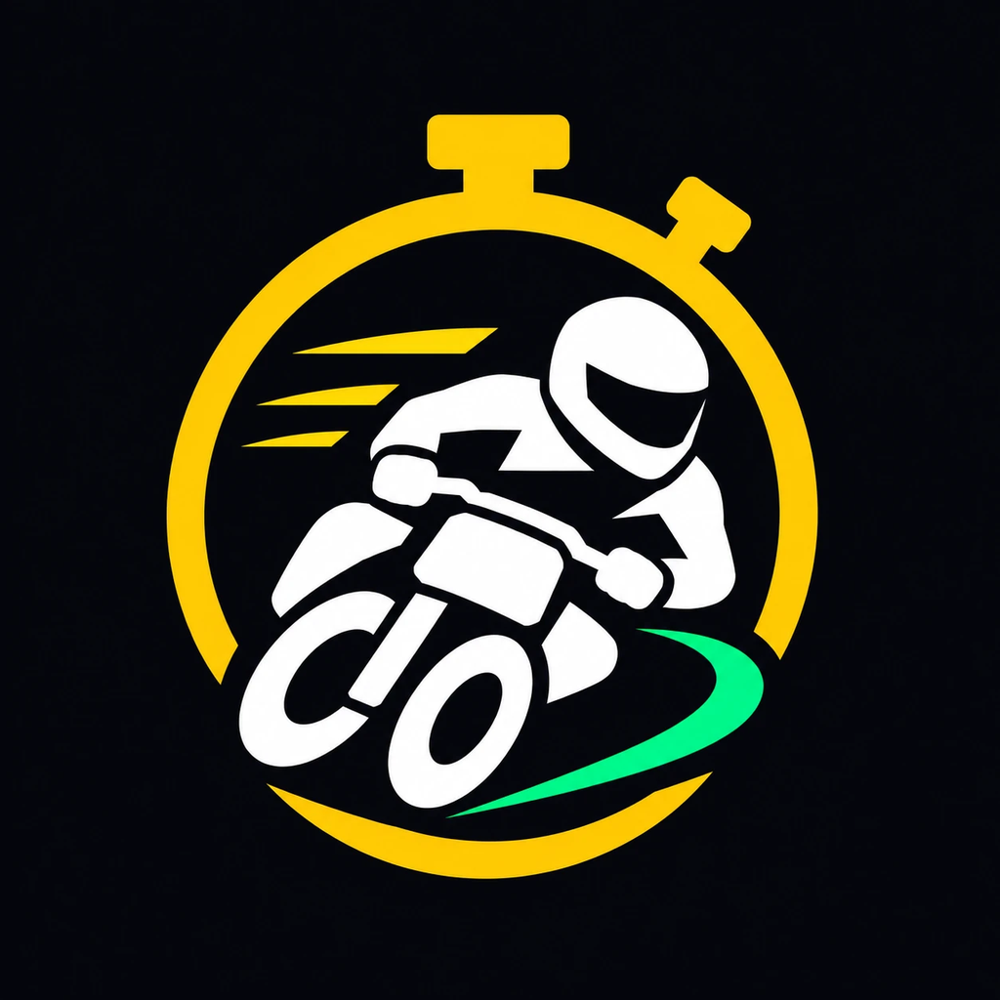

Cronómetro GPS de vueltas para pit bike y motos de circuito, con rodadas y rankings entre amigos.
¿Dudas, fallos o sugerencias? Escríbenos a jaimemg8@gmail.com.
¿Cómo marco la meta? En Circuitos, busca el circuito en el mapa por satélite, elige «Meta» y toca sobre la pista. También puedes descargar un circuito ya configurado en Circuitos → Comunidad.
¿Puedo llevar el móvil en el bolsillo? Sí. La app sigue cronometrando con la pantalla apagada y te canta los tiempos.
¿Cómo borro mi cuenta? Escríbenos al correo de soporte y borraremos tu cuenta y todos sus datos.